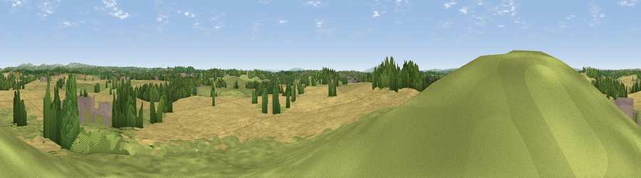

Viewpoint near Elmbridge
#25108 in England · top 51% of its area beats it · near ElmbridgeThe view, rendered

A 360° render of this exact spot computed from the terrain model, tree cover and land cover — summer colours, afternoon light, calibrated against photographs of famous viewpoints. Real trees, hedges and buildings will differ in detail.
The panorama
Grey silhouette: terrain skyline in each direction (720 bearings, Earth curvature and refraction included). Dashed green: skyline with trees (+15 m) and buildings (+8 m) as obstacles. Blue strip: how far the ground is visible on each bearing.
Where the view opens
Wedge length = distance to the farthest visible ground on that bearing (vegetation-aware). Rings at 10, 25 and 50 km.
What fills the view
63% cropland · 22% grassland · 11% woodland · 4% built-up
Angular shares of the visible panorama (visual magnitude), not map area. Landscape diversity 0.43 (0–1 Shannon).
Key numbers
More beautiful places nearby
The staircase of upgrades: each row has a higher view potential than everything closer. Driving times are estimates from straight-line distance, calibrated against real road routing — check an actual route before setting out.
| Place | Direction | Drive | Score |
|---|---|---|---|
| Viewpoint near Elmbridge | NNW · 2 km | ~4 min | 50.4 |
| Newland Common | S · 5 km | ~12 min | 52.0 |
| Viewpoint near Hanbury | ESE · 6 km | ~12 min | 57.1 |
| Viewpoint near Dodford | NNE · 6 km | ~13 min | 57.7 |
| Viewpoint near Hanbury | SE · 7 km | ~14 min | 62.1 |
| Stagborough Hill | WNW · 13 km | ~24 min | 63.8 |
| Holywell Hill | NE · 13 km | ~24 min | 69.4 |
| Windmill Hill | NNE · 14 km | ~25 min | 73.2 |
52.29227, -2.14621 · source: screening · position refined by local search. Computed location — check access rights before visiting.